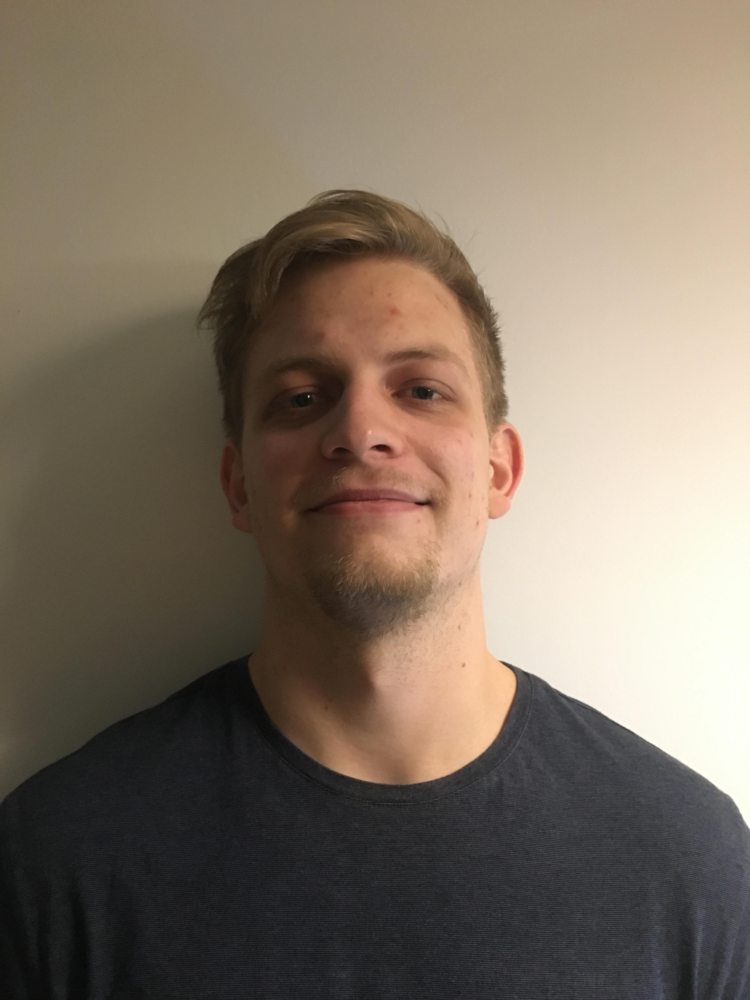

PhD Student in Statistics
Statistical Laboratory
Department of Pure Mathematics and Mathematical Statistics, University of Cambridge
My current research involves...
I am jointly supervised by Professor Rajen Shah and Professor Richard Samworth. Previously, I did a master's thesis under the supervision of Professor Jonas Peters at the University of Copenhagen.
Keywords: statistics, theoretical statistics, conditional independence testing, causal inference, semiparametric statistics, nonparametric statistics, non-euclidean statistics